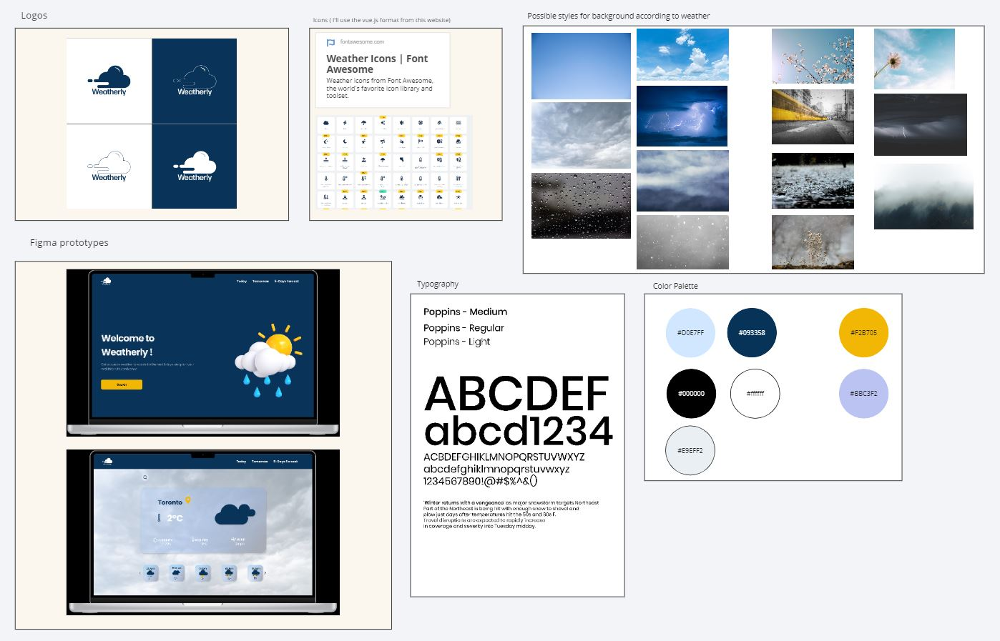
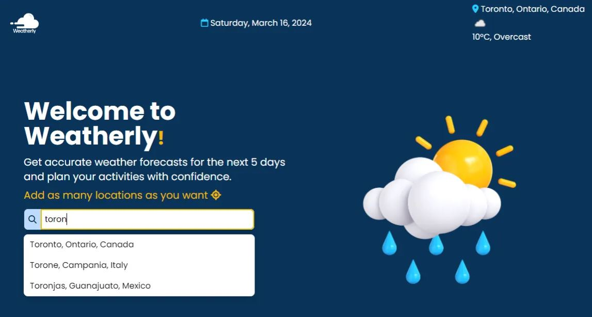
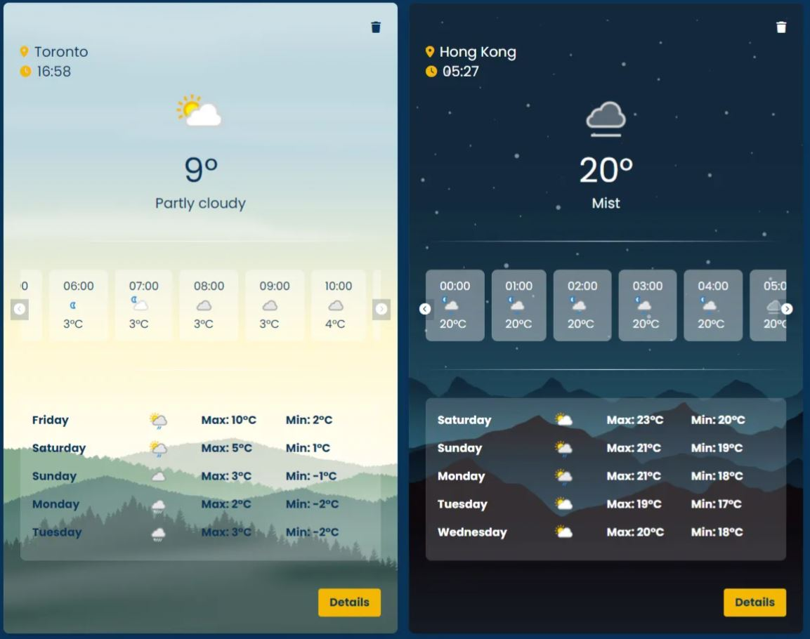

The goal of this project was to create a weather app that can show users the current weather condition and the a 5-day weather forecast. However, I was able to display only 3 days because I’m using the free version of the API.Apart from this my goal was to learn and be familiarized with Vue.js.
I started this project by creating a moodboard, selecting color palette, typography, creating a logo, and creating a wireframe in Figma of how I wanted the app to look like. At this point I had no idea of how to use Vue.js, so I wanted to keep it very simple. The final result is a bit different but same it has the style.
For the development part I started by creating accounts in both APIs website Weatherapi and Mapbox. This way I will have the API keys and access token to fetch the data I needed. The Weather API I used it for most of the data: current weather conditions, 3 days forecast, day, time, icons, and location autocomplete.
The Geocoding Mapbox API was used to detect the location of the user’s browser to show the current weather condition of that city. For this the user needs to give permission to the app to detect the location. After this users can search for a new location or their same location so a card with more details will be added in the app. Users can add as many locations as they want. According to the time of the day (morning or night) the background of the card will change the image.
In this cards users can see the current weather condition, the hourly weather conditions, a 5-day forecast (now 3-day forecast because of free API version), time and location, and they can also see more details of the current weather. If they want to delete a card they can just click in the trash bin icon and delete the card. For the styling I used Tailwind. This is something new I learned in this project. I liked that it is easy to write the classes on the same line without having to write so much CSS or having to go to the CSS file. So I think is very convenient, you can adjust almost everything with it, and you can make your app responsive as well.
 Completing this project was mostly fun. I enjoyed it. There were some struggles with not knowing the right classes for tailwind, and also how to write certain parts of the code in Vue.js. There is still a lot that I need to learn from both frameworks, but I think they are worth it to learn because the lines of code are a lot smaller and intuitive. Overall, I happy with the outcome of this project. I was able to add everything I wanted. However, in the future I want to make more improvements like being able to click on each day and see the forecast for that specific day. Also, improve the sizing in the different devices, and I would like the backgrounds to change not only depending on the time of the day, but also depending on the weather conditions. Hopefully, I can makes this changes soon. I’m exited to continue learning, and imporving as a developer.